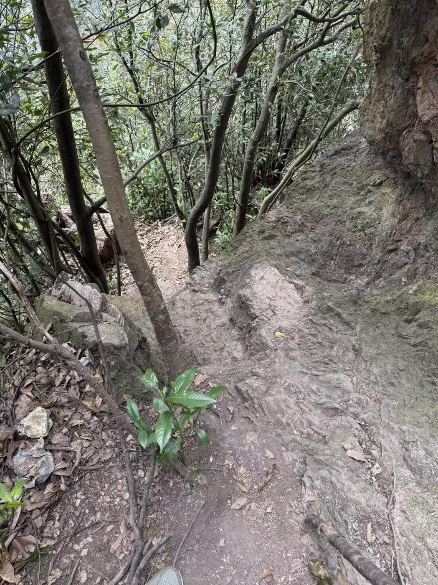
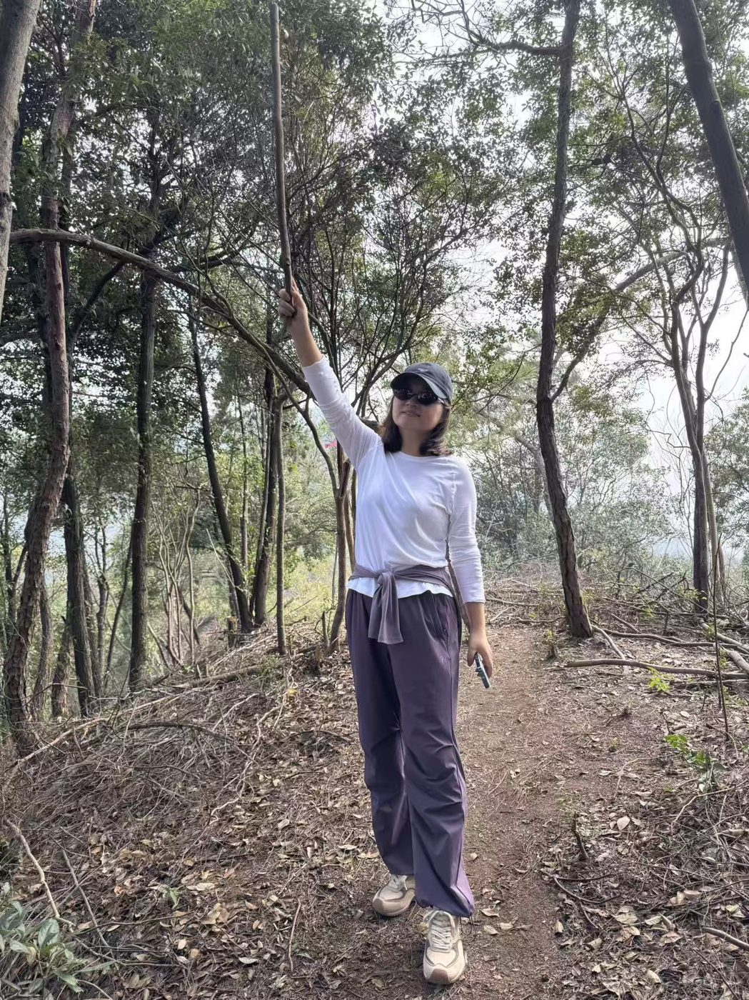
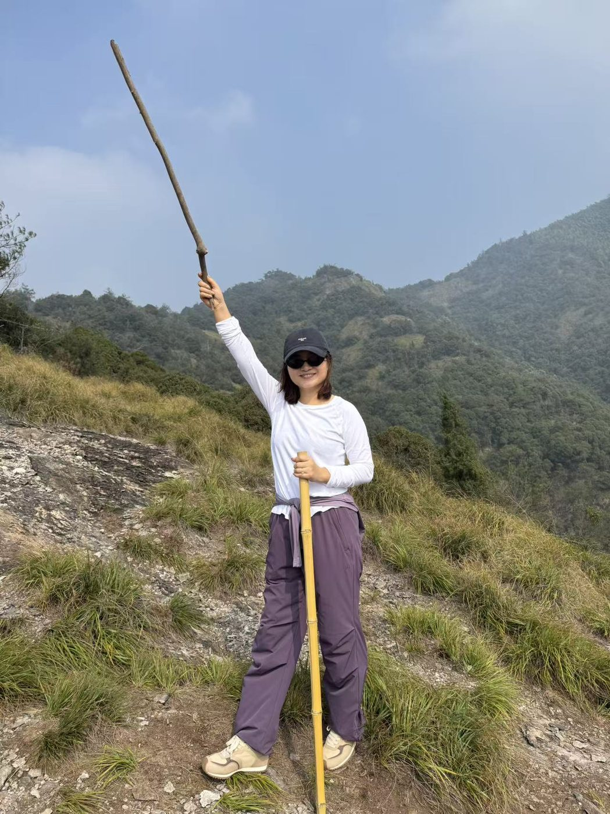
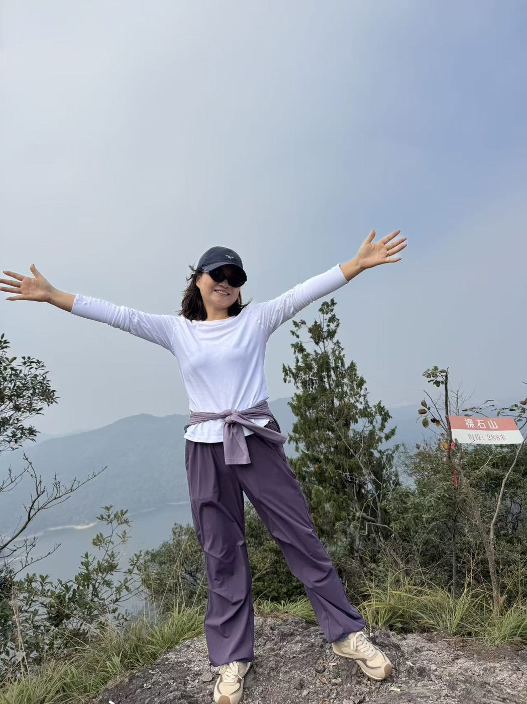
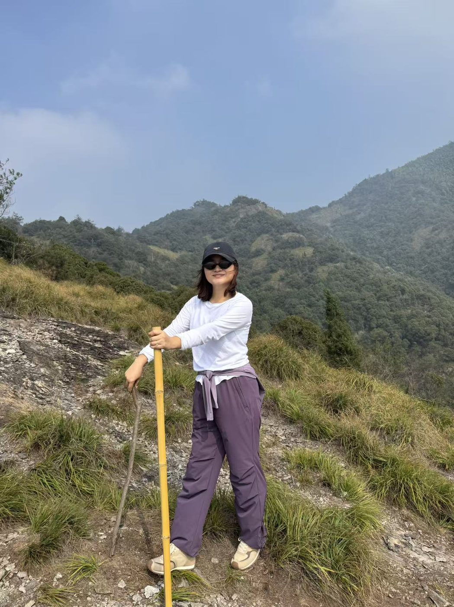

这个周末，我们逃进了浙北大山。🌿 目的地是安吉的裸石山，海拔 258 米——听起来不高，对吧？但脚踩上去的那一刻就明白了，这座山可不会跟你客气。
周六天刚亮就出发了。车里没放行李，只带了水、一点吃的，和一种"登顶就赢"的赌气。导航把车停在半山腰，剩下的路，只能靠腿。
📍 第一段：路比想象中难
进了林子，"路"这个词就开始打折扣了。树根盘着脚面，石头硌着膝盖，坡越来越陡，空气越来越稠。树枝把天挡成一片深绿，汗顺着脖子往下淌，T 恤湿成一层膜。

树棍不只是工具，是这条路给自己配的拐杖。每次想停，手里那根棍子就提醒自己：再顶一下。就一下。
📍 第二段：差点放弃的那个时刻

爬不动的时候，给自己拍了张武打姿势的照片。不是为了耍帅，是想骗自己：这双腿已经扛了我一路，别在终点前认输。喘匀气，接着走。
📍 山顶：风来了，视野开了

然后，我们到了。
风从耳边过去，视野一下子打开。脚下是光秃秃的裸石，远处是安好的湖，天边是洗干净的蓝。刚才还在喘气的身体，忽然就不觉得累了——原来累和值，可以发生在同一个地方。


后记
有人说爬山是为了看风景。但我觉得，真正让人记住的，是那段差点放弃的路。所以——下次再看到一条难走的路，别停。山顶那边，有风在等你。